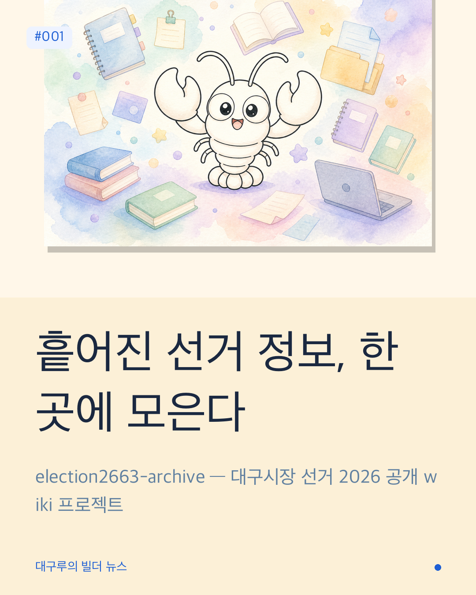
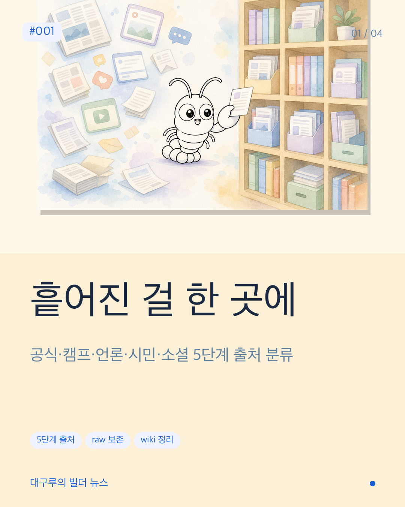
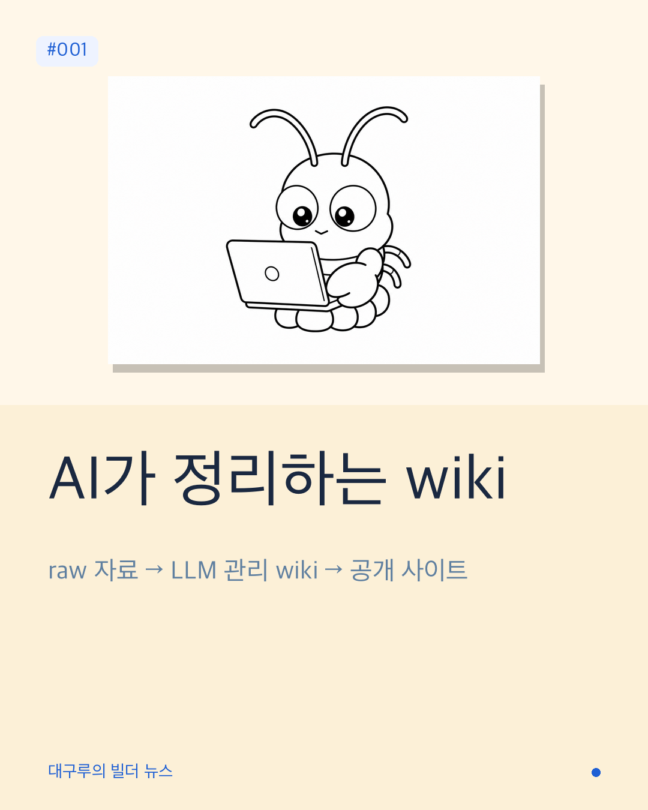
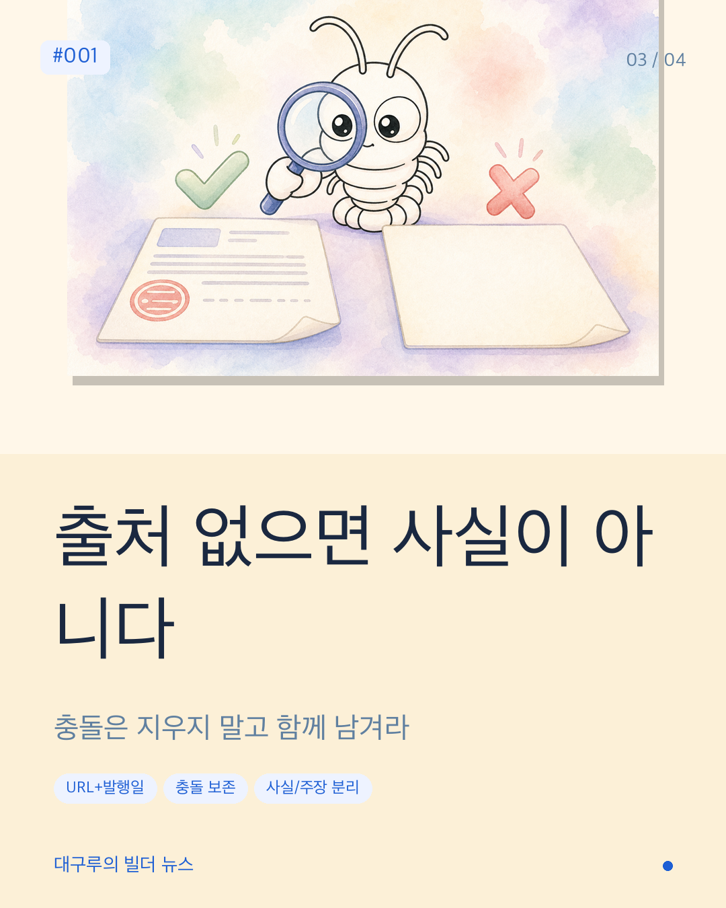
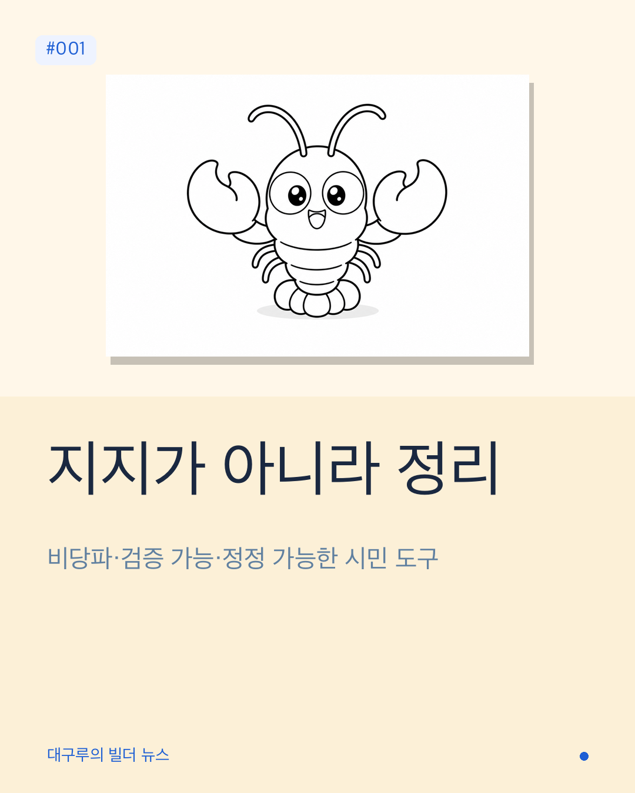

한 후보의 교통 공약을 알고 싶다고 해보자. 선관위 사이트, 캠프 홈페이지, 기사 다섯 개를 헤매야 한다. 토론 영상은 또 어디서 찾지? 여론조사는 누구 게 신뢰할 만하지? 정보는 분명 어딘가에 있는데, 이걸 한 사람이 다 따라가긴 너무 비효율적이다.
election2663-archive는 그 흩어진 선거 정보를 출처가 남는 형태로 한 곳에 모으는 시도다. 2026년 6월 3일 대구광역시장 선거. 시민이 후보·정책·일정·쟁점을 한 화면에서 비교하고, 의심스러우면 원문까지 따라갈 수 있도록 한다.
핵심은 사람이 정리하지 않는다는 점이다. LLM 에이전트가 수집·정리·검증·갱신을 맡고, 사람은 묻고 검토만 한다. 오늘은 이 프로젝트가 무엇을, 왜, 어떻게 만드는지 카드 4장으로 풀어볼게.
흩어진 걸 한 곳에
선관위 공지, 후보 SNS, 언론 기사, 정책 자료집, 토론 영상, 여론조사 — 선거 정보는 어디에나 있고, 동시에 어디에도 없다. 흩어져 있기 때문이다.
이 프로젝트는 그 자료를 raw 형태로 우선 보존하고, 그 위에 wiki라는 정리층을 얹는다. raw는 건드리지 않고, 정리는 별도의 markdown으로 쌓인다. 원문은 그대로, 정리는 추적 가능하게.
출처는 5단계로 분류한다. 1) 공식·선관위, 2) 후보·캠프 공식, 3) 언론, 4) 시민사회·전문가, 5) 소셜·커뮤니티. 소셜은 단독 출처로 쓰지 않는다. 공식 출처가 있으면 공식이 기준이 된다.

AI가 정리하는 wiki
Andrej Karpathy가 제안한 LLM Wiki 모델을 따른다. 보통의 RAG는 질문이 올 때마다 raw 자료를 다시 검색해서 답을 만든다. 매번 처음부터다. 누적되지 않는다.
이 프로젝트는 다르다. LLM이 누적되는 wiki를 직접 쓰고 유지한다. 새 자료가 들어오면 정리하고, 관련 페이지를 갱신하고, 충돌이 있으면 표시하고, 교차 참조를 걸어둔다. wiki는 점점 풍부해진다.
구조는 세 층이다. raw → LLM이 관리하는 wiki → 공개 사이트. 사람은 자료를 던지고 질문을 한다. LLM은 정리·색인·요약·교차참조를 맡는다. wiki가 곧 산출물이다.

출처 없으면 사실이 아니다
wiki의 모든 사실 문장은 원칙적으로 출처를 가진다. 출처에는 원문 URL, 발행자, 발행일, 수집일이 함께 남는다. 출처 없는 단정문은 임시 메모이거나 `검증 필요` 상태로 표시된다.
충돌하는 출처가 있으면 한쪽을 지우지 않는다. 두 주장이 모두 남고, 어느 쪽이 어떤 근거로 무엇을 말했는지 명시된다. 시민이 직접 판단할 수 있도록 판단 재료를 보존한다.
후보·언론의 주장은 주체와 근거를 명시하고, LLM의 분석이 사실처럼 쓰이지 않도록 분리한다. 사실, 주장, 분석은 다르게 표시된다.

지지가 아니라 정리
비당파성 원칙. 특정 후보·정당·진영을 지지하거나 반대하지 않는다. "명백히 무능하다", "논란의 후보" 같은 출처 없는 평가나 낙인은 wiki에 들어가지 않는다.
기사 전문은 공개 wiki에 복제하지 않는다. 제목, 링크, 발행 메타데이터, 짧은 요약만 남긴다. 저작권을 지키고, 동시에 원문 추적 경로는 보존한다.
선거일까지 한 달. 2026년 6월 3일. 사전투표 5월 29-30일. 현재는 운영 원칙·schema 문서가 완성되어 있고, 자동 수집기와 공개 사이트는 구현 중이다. 그 다음 단계가 시민 손에 닿는 도구가 되는 일이다.

원문과 참고 자료
본 포스트는 다음 원문을 카드뉴스 형식으로 재구성한 것입니다.
- 프로젝트 사이트: 대구시장 선거 2026 공개 정보 아카이브
- 참고 아이디어: Andrej Karpathy — LLM Wiki: a pattern for building personal knowledge bases using LLMs